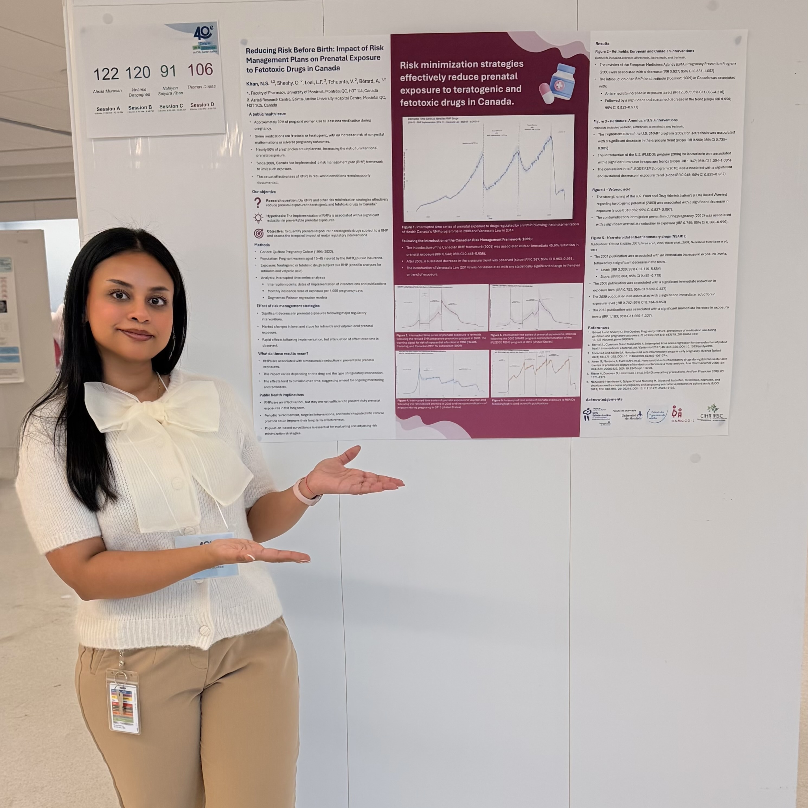
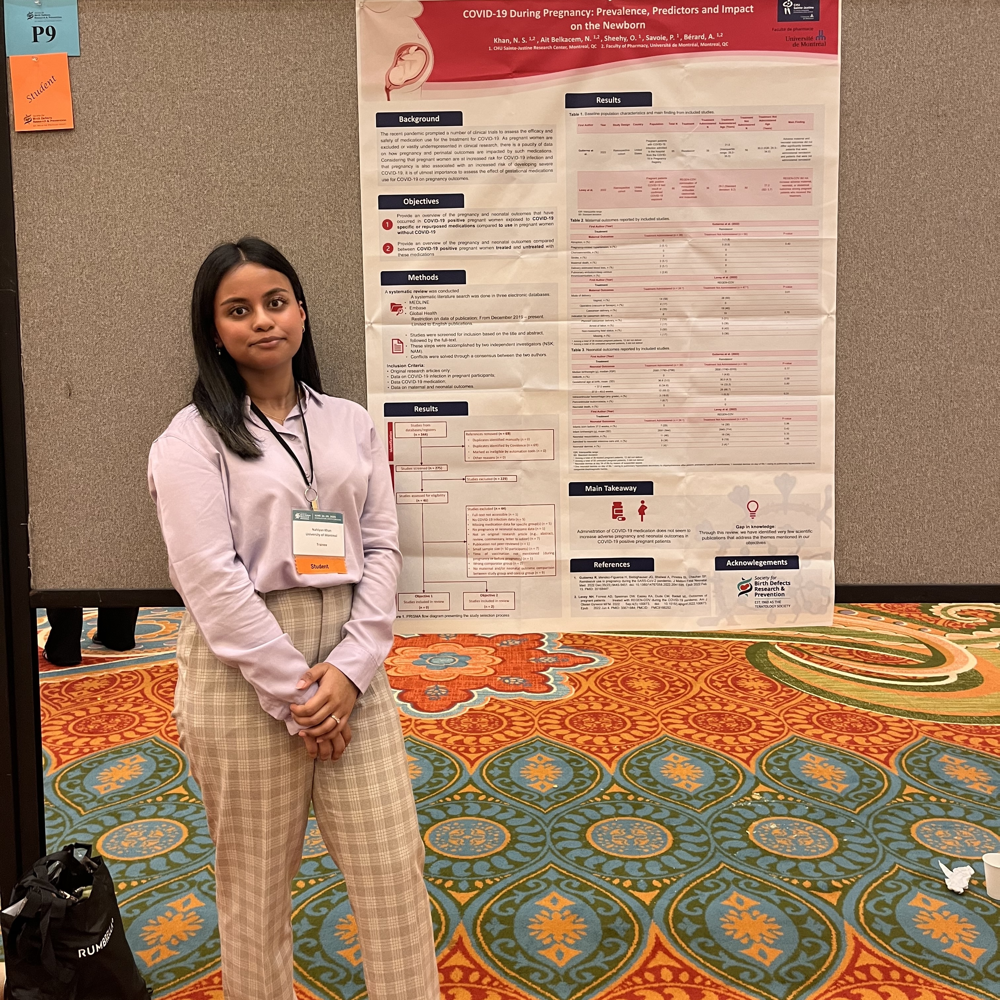
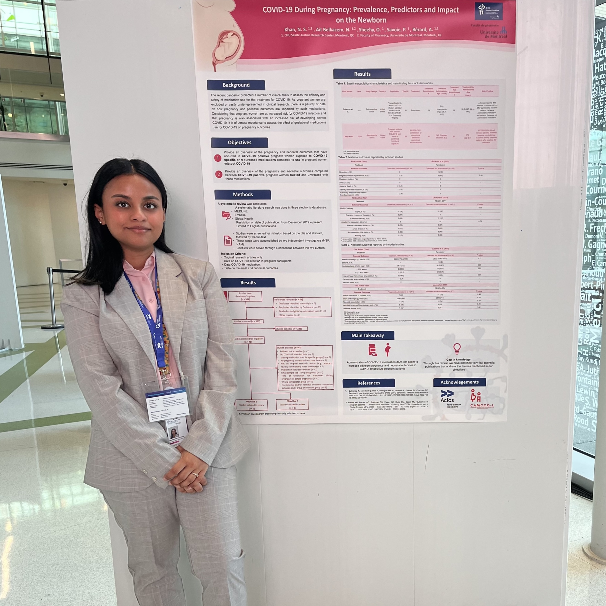
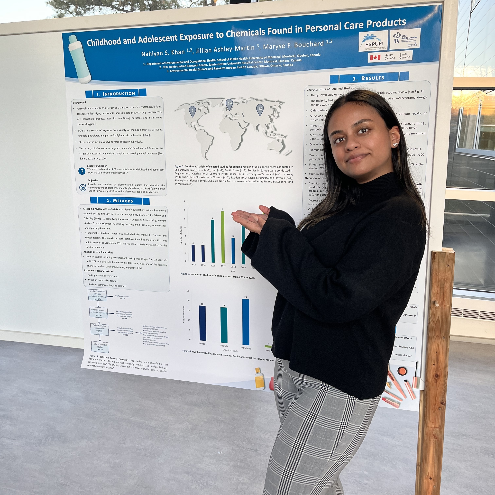

Journal Articles
Reducing Exposure Before Birth: An Interrupted Time Series Study of Prenatal Exposure to Fetotoxic Medications Under Risk Management Plans in Canada
Clinical Pharmacology & Therapeutics · 2026 · DOI: 10.1002/cpt.70353
Using interrupted time series analysis applied to the Quebec Pregnancy Cohort (~559,000 pregnancies, 1998–2022), this study evaluated whether Canadian risk management plans reduced prenatal exposure to fetotoxic medications. Segmented quasi-Poisson regression with Newey-West HAC SEs and Fourier seasonality adjustment, with non-fetotoxic controls as negative comparators.
Safe Beginnings Special Issue — Mother-Child Cohorts in Canada and France
Thérapie · Expected 2025–2026
Multi-manuscript special issue reviewing and comparing mother-child cohort infrastructure in Canada and France, characterising data sources, exposures, and outcomes relevant to perinatal pharmacoepidemiology.
Conference Abstracts
Graduate Theses
Doctoral Thesis
This thesis comprises three PhD projects:
Childhood and Adolescent Exposure to Chemicals Found in Personal Care Products
Background: Personal care products (PCPs) contain a variety of chemicals including parabens, phenols, phthalates, and per- and polyfluoroalkyl substances (PFAS). Exposure to these chemicals is of concern for children and adolescents, who possess increased susceptibility to chemical exposures. No published review had previously explored youth exposure to chemicals found in PCPs.
Objective: This scoping review aimed to provide an overview of biomonitoring studies describing concentrations of parabens, phenols, phthalates, and PFAS following PCP use among children and adolescents aged 5–19 years.
Methods: The search was conducted in MEDLINE, Embase, and Global Health. Articles were screened and assessed for eligibility; data were extracted to summarize findings.
Results: 37 studies were included (first appearing in 2013). The majority were cross-sectional (n=35) with more than 100 participants (n=27). Most frequently studied chemicals were phthalates (n=23), parabens and phenols (each n=18), and PFAS (n=1). Urine was the primary biological matrix (n=36). Thirty-one studies reported at least one positive association between PCPs and specific chemical classes — including makeup and parabens, lotion and phenols, and perfume and phthalates.
Conference Presentations & Posters
Poster Presentation — Reducing Exposure Before Birth: An Interrupted Time Series Study of Prenatal Exposure to Fetotoxic Medications Under Risk Management Plans in Canada
International Society for Pharmacoepidemiology (ISPE) · ICPE 2026 · Milan, Italy · August 29 – September 2, 2026

Poster Presentation — Reducing Exposure Before Birth: An Interrupted Time Series Study of Prenatal Exposure to Fetotoxic Medications Under Risk Management Plans in Canada
CEQSCEB Epidemiology & Biostatistics Symposium · ESPUM, Université de Montréal · May 21, 2026

Poster Presentation — Reducing Exposure Before Birth: An Interrupted Time Series Study of Prenatal Exposure to Fetotoxic Medications Under Risk Management Plans in Canada
40th Annual Congress · CHU Sainte-Justine Research Centre · Montréal · February 2026

Poster Presentation — COVID-19 during Pregnancy: Prevalence, Predictors, and Impact on the Newborn
63rd Annual Meeting of the Birth Defects Research for Children (BDRP) · Charleston, South Carolina, USA

Poster Presentation — Childhood and Adolescent Exposure to Chemicals Found in Personal Care Products
90th Acfas Congress · Université de Montréal · Selected as Vitrine Relève emerging researcher by Université de Montréal

Poster & Oral Presentation — Childhood and Adolescent Exposure to Chemicals Found in Personal Care Products
1st Scientific Symposium & 3rd AGM · Intersectoral Centre for Endocrine Disruptor Analysis (CIAPE/ICEDA) · INRS, Laval, Québec · December 9, 2022
Workshops & Invited Contributions
Workshop — Pharmacoepidemiology Case Studies
14th Summer School on Medicines · CAMCCO-L / MICYRN · Montréal, Québec, Canada
Workshop — Pharmacoepidemiology Case Studies
13th Summer School on Medicines · CAMCCO-L / MICYRN · Barcelona, Spain